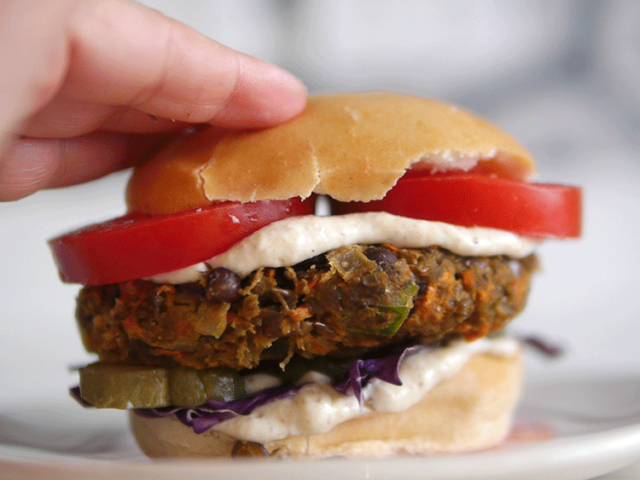

Brownie con cacao

| Ingredientes |
Cantidades |
| Lentejas cocidas |
250gr. |
| Zanahoria |
1 |
| Cebolla |
1/2 (media) |
| Diente de ajo |
1 |
| Trozo de morrón |
1 |
| Tomates deshidratadoss |
3 |
| Cebolla de verdeo |
1 |
| Clara |
1 |
| Sal, pimienta y aceite |
A GUSTO |
- Poner las lentejas cocidas (es importante que no estén al dente, si no un poco pasadas) en un bol y pisarlas o pasarlas por un mixer o procesadora.
- Rallar la zanahoria y sumarla a las lentejas.
- Rehidratar los tomates en agua caliente 1 minuto en el microondas, picar y reservar.
- Picar la cebolla, el ajo y el morrón y saltear en una sartén con aceite hasta que la cebolla esté transparente. Son unos minutos nomás
- Poner la clara de huevo y un poco de pan rallado y mezclar con la mano. Pueden usar el huevo entero, pero la clara nos ayuda a unirla sin aportar más sabores o grasas. Si la mezcla está muy húmeda, agregar un poco más de pan rallado.
- Mandar a la heladera 30 minutos.
- Para darle forma a las hamburguesas de lentejas, se pueden untar las manos con un poco de aceite, armar bollitos y luego aplastarlas.
- Se pueden hacer a la plancha o al horno, y también se pueden congelar con separadores para tener listas.
Receta de: Paulina cocina